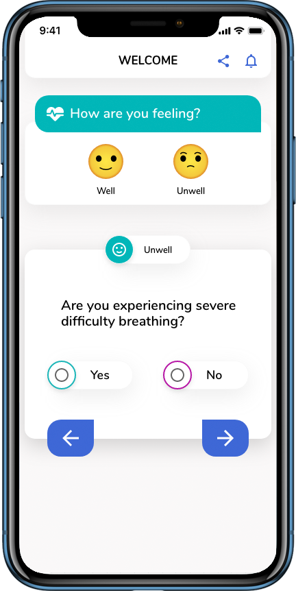
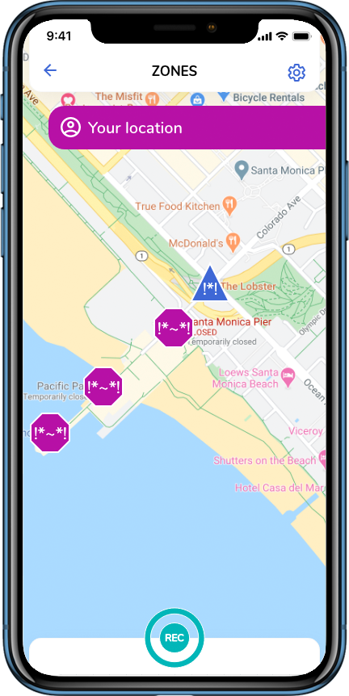

The Ray Platform is an open source, self-assessment and contact tracing app developed to engage people who wish to take part in stopping the spread of COVID-19. The Ray App protects the privacy of individual users. We value health and liberty for all people.
The Ray App differs from other contact tracing proposals in that it utilizes daily self-assessment and geolocation tracking. Daily self-assessment speeds awareness of outbreaks by days over systems that record only positive test results. With doubling time of 6-7 days, time is of the essence. Geolocation, anonymous logging of visits to zones (public places), assists in tracing the places where the infection has spread and thus the people who are at risk. As the WHO describes on it’s Q&A on coronaviruses (COVID-19) page,
“The disease can spread from person to person through small droplets from the nose or mouth which are spread when a person with COVID-19 coughs or exhales. These droplets land on objects and surfaces around the person. Other people then catch COVID-19 by touching these objects or surfaces,”.

Self-assessment is essential for the fast detection and mitigation of outbreaks. Increased incidence of symptoms among people who have been in contact with one another is easily detected. Probabilistic analysis and machine learning algorithms can be applied to give awareness of potential outbreaks. Individual users who are at greater risk because they have visited zones where the may have been exposed to the virus on surfaces in that zone or through droplets in the air produced by potentially infected individuals who were in close proximity are prompted to self assess at an increased cadence due to their increased risk. Where public health authorities are participating, targeted messages can be sent through the app to individual app users who are a increased risk of exposure based on that health authority’s protocols and tolerances. Likewise, different messages can be sent to individual users who have been in contact with app users who have been confirmed to have contracted the virus. Given a high enough adoption rate and usage of the app within a community, it could be possible for a health authority to message users who are at a higher risk of being infected but asymptomatic.

The Ray Platform adds a location-based dimension to contact tracing and outbreak detection that Bluetooth proximity does not measure. When app users enter zones (public spaces), their visit to that zone is logged publicly as an anonymous visitor. Should that person become symptomatic or test positive for COVID-19, people who visit that zone at the same time and for 72 hours afterward are considered together. Their relative risk is calculated so that self-assessment cadence and public health messaging can be adjusted accordingly.
We are assembling a core team to lead the project. If you are interested in working as part of the core team or if you are interested in contributing, please fill out this form and we will get back to you as soon as possible (hopefully in less than 24 hours unless we are overwhelmed).
If you are part of a public health authority, we want to talk. The best way to reach us directly is through an introduction our project’s founder, Gregg Oldring. In order to tackle this problem as quickly as possible, this app is designed to be able to be used in your community without requiring your participation but of course, adoption by your constituents and our ability to adhere to your protocols are both dramatically improved with your support. Lives will be saved if we work together. We advocate that you support more than one project to address your community’s needs for contact tracing and self-assessment. The risk of failure increases if only one approach is taken.
We propose a voluntary COVID-19 self-assessment and contact tracing platform that protects civil liberties. This platform is divided into modules for the purposes of resiliency and speed of development. While work on each module can be done concurrently, the critical modules for a minimum viable product (MVP) are the Self-assessment module and the Cryptology module. Together, they build the foundation for rich, usable data.
Framed as, As a _____, I want _____ so that ____. stories.
As a citizen, I want to be able to share my location history with public health so that I can be informed if I have visited a location that puts me at risk of contracting COVID-19.
As a citizen, I want to be able to share my location history with public health so that others can be quickly informed that they are at risk of contracting COVID-19 and can take extra precautions to protect the people they regularly come in contact with.
As a public health authority, I want to know as quickly as possible where infected citizens have been and whom they may have been in contact with.
As a citizen, I want to be able to stop sharing my location history with my government after the epidemic has passed so that my civil liberties are not jeopardized.
Transmission can occur in the following ways:
An app that checks your wellbeing at regular intervals and screens you for symptoms of COVID-19. The app rewards you for participation and encourages you share the app with friends and check in on eachother if you aren’t participating (presumably because you are feeling unwell). Before you venture out, you receive guidance on the precautions you should take and zones you should not visit. Zones are places outside your home where people typically intermingle such as businesses and public buildings. When you venture out, the app records your visits to zones. Collectively, all app users’ recent visits to zones are anonymously recorded and tagged with their health status. The anonymous logs of people they come in contact with are as well. When a person who recently visited a zone before you reports that they are infected, you and the other people who visited the zone are notified. The notifications include instructions on the steps they need to take to protect themselves and the people around them. So too when a /cluster/ of people who have visited a zone or been in proximity with someone you’ve been in close contact with begin /exhibiting symptoms/, you will receive a notification and guidance on the precautions you should take. For public health authorities, this app gives granular and predictive insight for contact tracing.
Contact tracing is increasingly effective with increased adoption within a locality. Attracting users to a voluntary app and platform is difficult. We address the need for our self-assessment and contact tracing app to appeal to the selfish needs of security and control for the individual user as well as the unselfish desire to do their part for a cause greater than themselves, namely the health of their community.
We anticipate waning motivation to continue using the app over time as users will (hopefully) predominantly not receive feedback that they are at increased risk. Therefore, gamification and continued connection to a cause greater then one’s self will be essential to long term success. Our app rewards positive behaviour and encourages daily use.
It is a reasonable concern that an automated system that notified people that they may have come in contact with COVID-19 could induce panic. For that reason, our automated methods do not message people that they are at risk, but rather prompt them to self assess. Self-assessment directs symptomatic people to isolate and/or get tested depending on protocols. Direct messaging to app users from public health authorities is at the discretion of the agency.
The identities of individual users are never made public. The advisories for zones that infected and symptomatic users have visited are transient. They are updated as the risk associated with a zone decline over time. The risk factor formula and the anonymized inputs are transparently shared. Weightings of small sample sizes and unverified assessments will be accounted for accordingly.
People who have contracted COVID-19 often feel shame. Their shame makes them reluctant to share their diagnosis with their community and their contact histories with contact tracers. The anonymous nature of the app keeps users’ diagnoses private. People who have come in contact with the infected person are not informed of the identity of that person. Infected people’s shame does not become a deterrent for the usage of the app.
Personally identifiable information will remain on each user’s mobile phone. Sharing of this information will be out-of-band and voluntarily transferred directly to a contact tracer when interviewing a user who has tested positive. Publicly available information is anonymized.
A concern of public health authorities is that automated systems could overwhelm their resources with inbound requests for testing and assessment. This platform will do the opposite. Calls to centers and visits to frontline workers for assessment will be reduced. The app’s daily self-assessments make them redundant. Likewise, only people who are symptomatic are prompted to seek testing. People who are asymptomatic receive no prompts to utilize public resources.
There will be trolls. There will be people whose self-assessment is inaccurate. Bad data such as false positives and false negatives are considerations of the statistical model that underpins the risk factors calculated in the model.